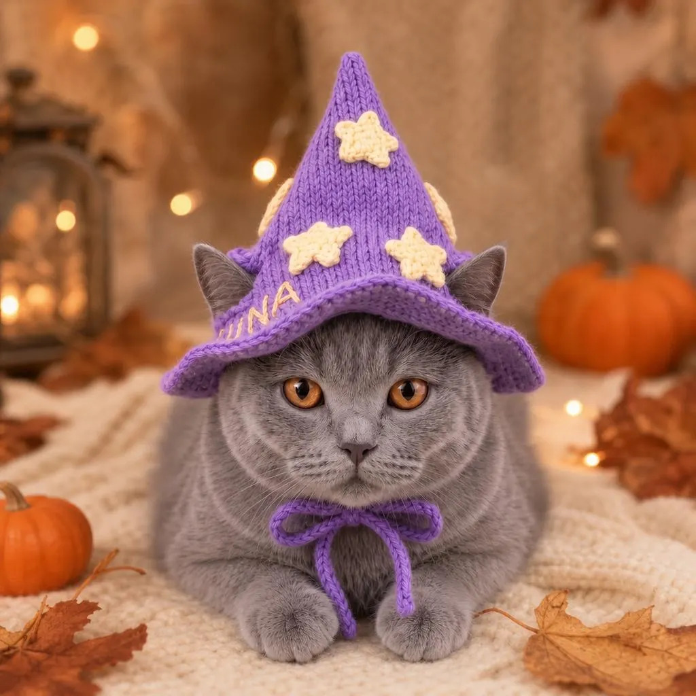

A wizard cat represents a whimsical blend of feline mystique and magical fantasy, often depicted as a clever, robed sorcerer sporting a miniature pointed hat. In modern pop culture and digital art, these mystical creatures are envisioned brewing potions in cauldrons, batting at floating magical runes, or channeling elemental spells through glowing crystal balls. Because cats are naturally associated with ancient folklore, independence, and a touch of mischief, they are the best wizards that would beat any Harry Potter wizard.